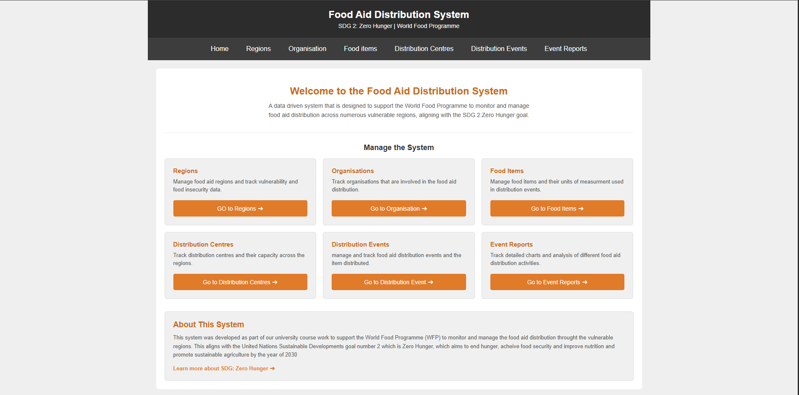
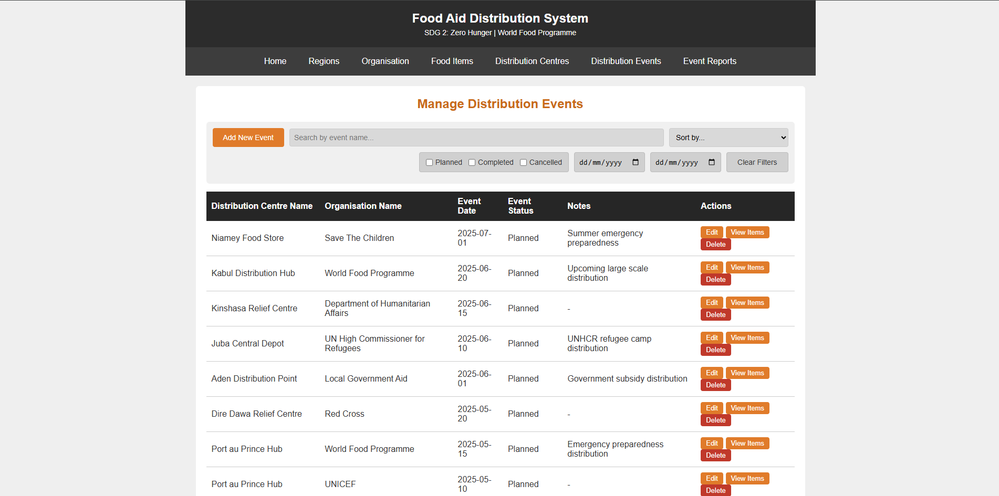
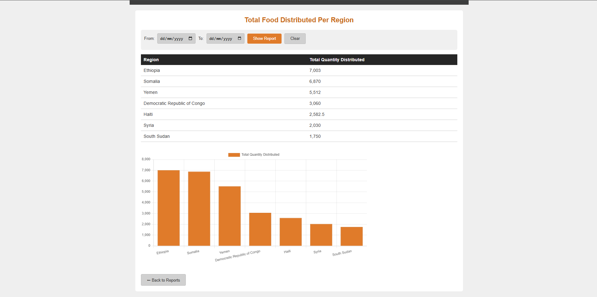
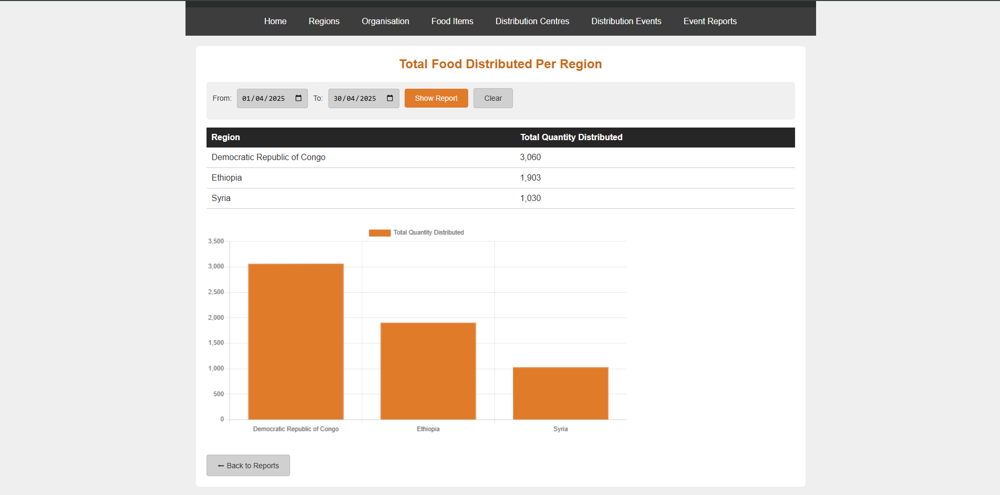
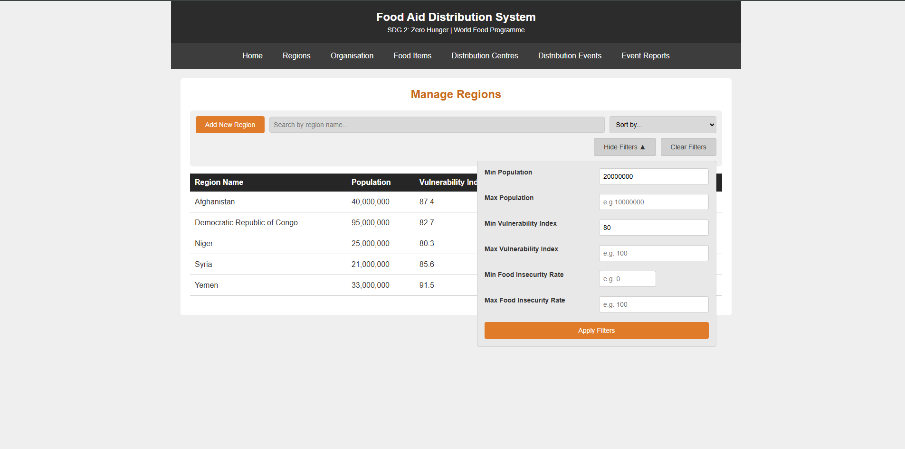
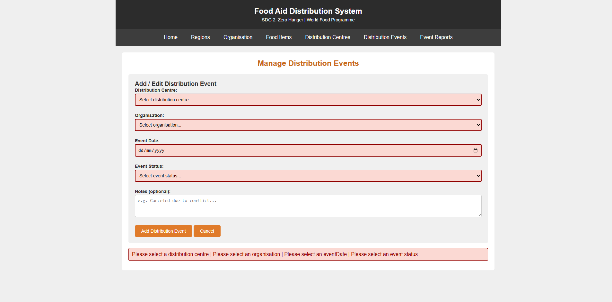
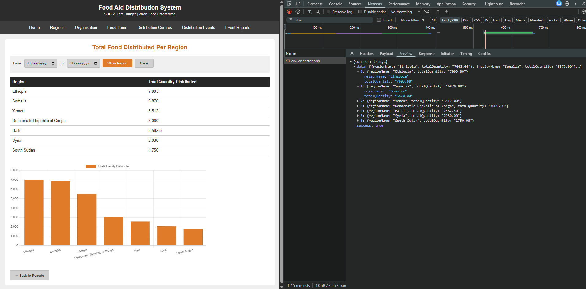

About
Second-Year BSc Computer Science Student at Queen's University Belfast, currently holding a 2:1 (67.5%) average and recipient of the Queen's Excellence Award.
I'm building a strong foundation across the core areas of computer science, from software development to systems and problem-solving, while figuring out where I want to specialise as I progress through my degree. I've also completed the Python for Everybody Specialisation through the University of Michigan, and I enjoy working on projects that let me apply what I'm learning in practical, hands-on ways.
As a Course Representative appointed by the university, I serve as a bridge between students and faculty, helping to improve the learning experience while developing my communication and leadership skills. I've also volunteered as an event steward at the Growing Up Muslim Conference, and spent time training in Taijutsu, which helped build discipline, focus, and resilience, qualities that continue to shape how I approach my academic work.
Projects
Food Aid Distribution System
A food aid distribution system designed for a university group project
Built with a team of four, modelled on how the World Food Programme tracks aid into food-insecure regions. I designed the relational MySQL schema across six linked tables, with foreign-key constraints and validation checks, then built the PHP backend and the Chart.js reporting layer on top.







Airline Booking System
A console based flight booking system built solo in Java, spanning 13 files across the model, system and user interface packages, that were developed over 27 Git commits.
This project uses a HashMap-based booking engine supporting 12 different operations, including flight search, seat booking guarded against double-booking, and cancellation guarded against double-cancellation. Booking references are generated as unique 6-character codes with collision detection, and all user inputs are guarded with validation.
Try it below! This is the actual program running live, not a recording. Start with option 1 to view the available routes, then use a flight number like BA101 to search flights, view the seat map, or book a seat.
Here is some test data to help you test the system out:
Airports: LHR, JFK, DXB, CDG, SIN
Flights: BA101 (LHR→JFK), BA102 (JFK→LHR), EK201 (LHR→DXB), AF305 (CDG→SIN), BA103 (LHR→JFK)
Seats follow a row + letter format, e.g. 1A for business, 4B for economy (on BA101/BA102)
Per-Feature Examples:
- Search Flights -- LHR to JFK, 2026-03-20
- View Seat Map -- flight BA101
- Book Seat -- flight BA101, seat 1A
- View All Bookings -- flight BA101
- Lookup/Cancel Booking -- use the reference shown after booking a seat
- Add Flight -- new flight number, LHR to JFK, Boeing-737, 2026-04-01T10:00